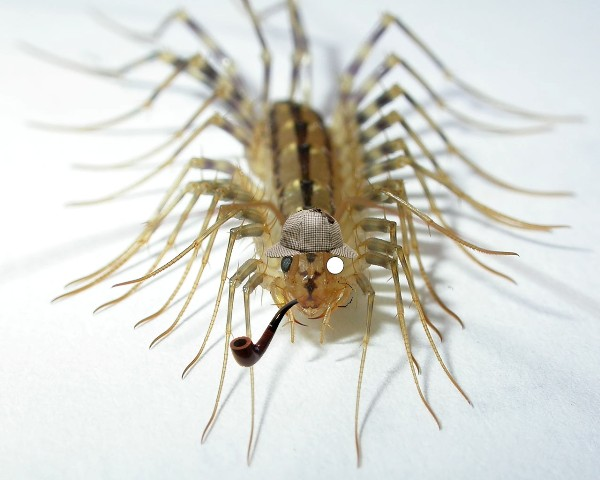
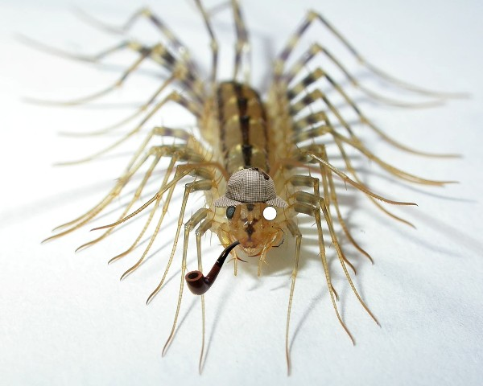

Неизвестно кто надел на сколопендру шапку. Рисунки не имеют копирайта.
 

Оригинал фото (без шапки) на странице Домашняя Сколопендра.
На самом деле - эта многоножка не сколопендра, а полезное насекомое Мухоловка . Она ловит клопов и тараканов.